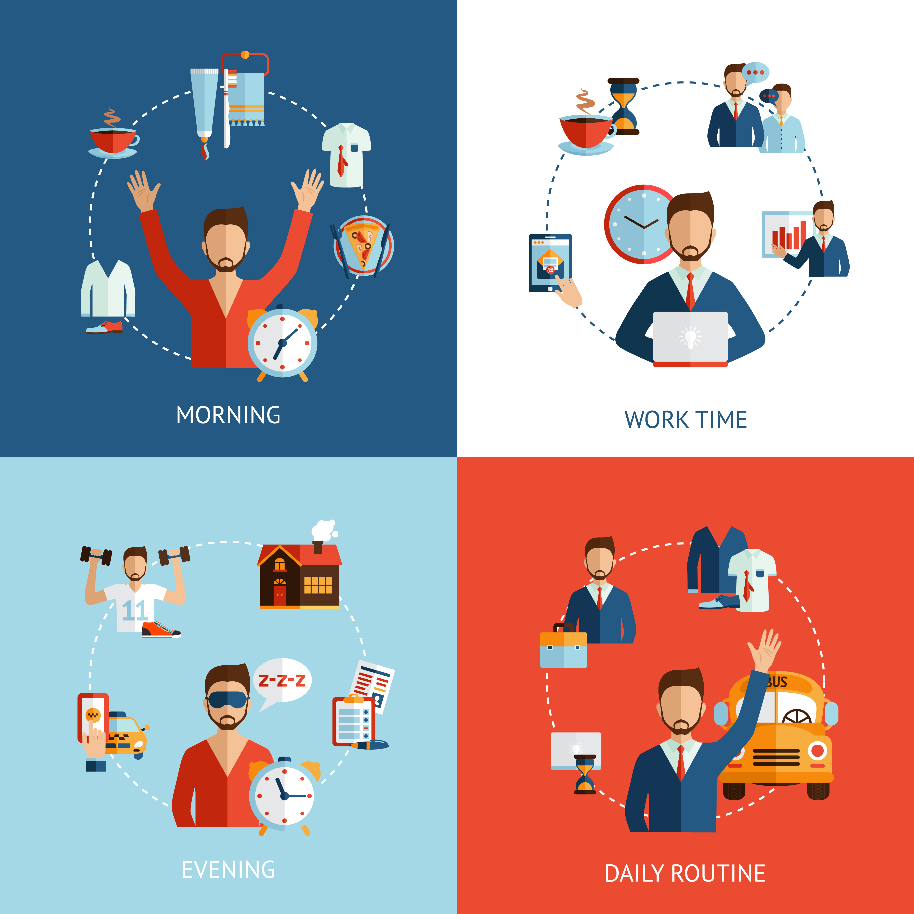

10 Habits of People Who Always Succeed – No Matter What
Published on: July 1, 2025

Have you ever wondered why some people just keep winning—no matter how many challenges life throws at them? They seem unstoppable. It’s not luck or magic. It’s habits.
Here are the 10 powerful habits that successful people practice daily—and that you can start today.
1. 💡 They Set Clear Goals
Instead of vague dreams, they break their vision into specific, measurable goals.
Try this: Write down your goals and set deadlines. Goals without timelines are just wishes.
2. ⏰ They Wake Up Early
Early risers often get more done. They start the day with clarity and control, while the world is still quiet.
“Win the morning, win the day.”
3. 📚 They Never Stop Learning
Winners are readers. They feed their minds with books, podcasts, and courses on business, health, communication, and more.
4. 📓 They Reflect Daily
Successful people review their day. What worked? What didn’t? This habit helps them grow 1% better every day.
Try this: Start a nightly journal – even 3 lines can help you grow.
5. 💪 They Stay Consistent
They show up even when they don’t feel like it. They know that success is a long-term game, not a one-day event.
Discipline beats motivation.
6. 🌱 They Invest in Themselves
Courses. Coaching. Gym. Mindfulness. They see self-investment as the best investment.
7. 👥 They Surround Themselves with Winners
“You become the average of the 5 people you spend the most time with.” They choose company that lifts, not limits them.
Audit your circle: Are they helping you grow or pulling you back?
8. 📴 They Control Their Focus (Not Their Phone)
They don’t get distracted every 10 seconds. They guard their attention like treasure.
Tip: Turn off non-urgent notifications for a week and watch your focus skyrocket.
9. 🧘 They Take Care of Their Health
Winners prioritize sleep, movement, and mental peace. Because a strong mind needs a strong body.
10. 🔄 They Fail Forward
Failure doesn’t scare them—it teaches them. They see every setback as a setup for a comeback.
🔥 Fall. Learn. Rise stronger.
🏁 Final Thoughts
Success isn't about being the smartest or richest. It's about building the right habits, one day at a time. Start small. Be patient. Stay consistent.
Which of these 10 habits will you start today? Let me know in the comments below 👇
What Schools Never Taught Us – But We Desperately Need to Know
Published on: June 28, 2025
We spent years in school memorizing facts, solving equations, and writing essays. But after graduation, many of us are hit with a harsh realization:
“Why didn’t school teach me anything useful for real life?”
Let’s explore 7 crucial life lessons that most schools never taught us—but we all desperately need to learn.
1. 💰 How Money Really Works
We learned formulas but not how to:
- Budget monthly expenses
- Understand credit card traps
- Build wealth
- Deal with taxes
Truth: Financial literacy is more powerful than earning a lot of money.
2. 🧠 How to Manage Mental Health
We never learned how to handle stress, anxiety, burnout, or depression.
Truth: Emotional intelligence (EQ) often matters more than IQ in real life.
3. 🗣️ How to Communicate Effectively
No one taught us how to:
- Say no with confidence
- Speak in interviews
- Resolve conflicts
- Truly listen
Truth: Communication is more important than knowledge alone.
4. 💼 How to Get a Job (or Create One)
We were taught to be employees but not how to:
- Build a resume
- Network
- Freelance or start a business
- Turn passion into income
Truth: Most opportunities come through people, not portals.
5. 🏠 How to Live Independently
Most of us graduated without knowing how to cook, pay bills, fix things, or rent a home.
Truth: Adulting is hard when you're never taught how to be an adult.
6. 🧭 How to Find Purpose
We were asked what we wanted to "be", but not what we cared about, or valued.
Truth: Most people chase goals they never truly chose.
7. 💬 How to Think Critically
We learned how to memorize—not how to question or think independently.
Truth: Critical thinking is the foundation of lifelong learning.
✨ Final Thoughts
Our schools gave us knowledge—but not wisdom. The good news? You can start learning these life skills today—through books, mentors, and experiences.
💬 What’s one thing you wish school had taught you? Drop it in the comments below 👇
From Procrastinator to Productivity Ninja – My 7-Day Transformation
Published on: June 25, 2025

Let’s be honest—I was a master procrastinator. Deadlines ignored. Tasks delayed. Stress levels high.
But something snapped. I challenged myself: “Become a productivity ninja in 7 days.”
Here’s how it went—and how you can try it too 👇
📅 Day 1: Face the Chaos
Wrote down everything I was avoiding. Cleaned workspace. Set up Google Keep and Notion.
Lesson: A cluttered desk leads to a cluttered mind.
📅 Day 2: Set Small Goals (Micro Wins)
Break big tasks into tiny steps. "Study for 3 hours" → "Read 2 pages."
Lesson: Small progress builds motivation.
📅 Day 3: Time Block Like a Boss
- 9–11 AM: Deep work (no phone)
- 4–5 PM: Admin tasks
- 7–8 PM: Break + Journaling
Used the Pomodoro technique (25 mins focus, 5 mins break).
Lesson: Time isn’t the issue. Focus is.
📅 Day 4: Beat Distractions
Installed Forest app and blocked social media. Used noise-cancelling headphones.
Lesson: Productivity = doing fewer wrong things.
📅 Day 5: Morning Routine Reset
- 6:30 AM wake-up
- 5-min journaling
- 10-min meditation
- 10 pages reading (Atomic Habits)
Lesson: Win the morning, win the day.
📅 Day 6: Say No (Without Guilt)
Turned down distractions. Said no politely but firmly.
Lesson: Every “yes” to others is a “no” to your priorities.
📅 Day 7: Reflect and Reset
Reviewed what worked, what didn’t, and what to keep doing.
Results: Completed 90% of tasks, felt calm, got ahead on assignments.
🔥 Final Thoughts
From overwhelmed → organized. From procrastination → productivity.
Productivity isn’t a personality—it’s a practice.
💬 Want to try this 7-day challenge? Comment which day resonated with you the most 👇
Leave a Comment